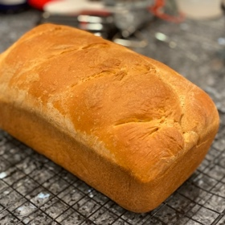
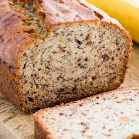
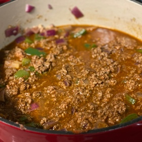
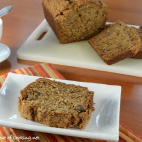
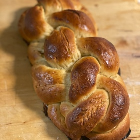
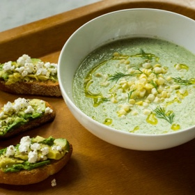
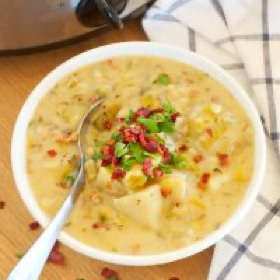
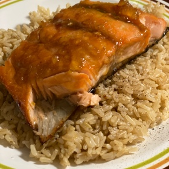
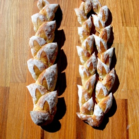
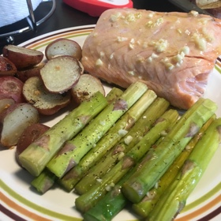

5-Minute Healthy Oatmeal
Anadama American Loaf Bread
Banana Bread
Beef/Turkey Chili
Best Banana Bread
Image
Bishop Sauce
Challah I
Chilled Cucumber Soup with Avocado Toast
Crock Pot Potato Bacon Leek Soup
Delicious Orange Ginger Glazed Salmon

Fig and Brie Burger
French Pain D'Epi Wheat Stalk Bread
Garlic Butter Baked Salmon
Image